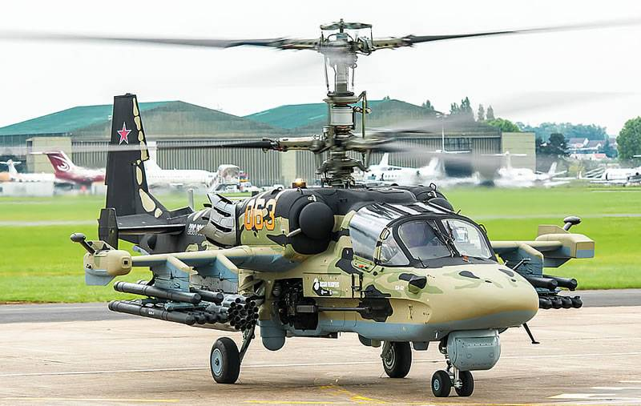

Ка-52 «Аллигатор» — это российский разведывательно-ударный вертолет нового поколения, визитной карточкой которого является уникальная соосная схема винтов, обеспечивающая феноменальную маневренность и возможность выполнения фигур высшего пилотажа, недоступных машинам классической схемы. Под его «капотом» установлены два мощных турбовальных двигателя ВК-2500, которые позволяют вертолету эффективно работать в условиях высокогорья и жаркого климата, а за выживаемость экипажа отвечает единственная в мире система катапультирования пилотов К-37-800М. Этот хищник вооружен до зубов: по правому борту размещена скорострельная 30-мм автоматическая пушка 2А42, а на шести точках подвески под крыльями располагается внушительный арсенал из сверхзвуковых противотанковых ракет «Вихрь» с лазерным наведением, блоков неуправляемых ракет С-8 или С-13 и ракет класса «воздух-воздух», что в сочетании с РЛС «Арбалет» превращает его в идеального охотника за бронетехникой в любое время суток.